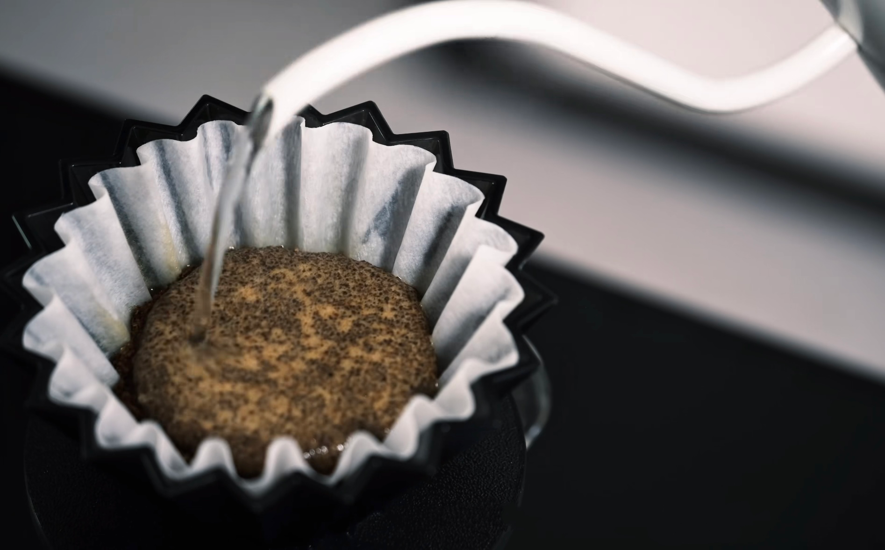

手冲咖啡：掌握黄金参数与三段式冲煮流程
制作一杯美味的手冲咖啡，除了选择合适的器具，更重要的是掌握各项冲煮参数和精准的流程。这些细节决定了咖啡的风味、口感和香气。本篇将带你深入了解手冲咖啡的常规参数设置，以及经典的三段式冲煮流程。
手冲咖啡的常规参数
以下是手冲咖啡中几个关键的参数，它们相互影响，共同决定了最终的咖啡风味：
- 咖啡豆用量：推荐15g~20g，根据个人喜好和冲煮器具容量调整。
- 水粉比：通常控制在1:15~1:16之间（例如：15g咖啡粉对应225~240g水）。这个比例直接影响咖啡的浓度。
- 水温：水温是萃取效率的关键。
- 浅烘焙：92-96℃（突出果酸与花香）
- 中烘焙：88-92℃（平衡酸甜）
- 深烘焙：84-88℃（降低焦苦感，避免过度萃取）
- 研磨度：中等偏粗，颗粒大小参考白砂糖。过细容易过萃，导致苦涩；过粗则容易萃取不足，风味寡淡。
- 水质选择：推荐使用TDS50-150ppm的软水（如过滤水或天然矿泉水），纯净的水质能更好地展现咖啡风味。
冲煮流程与科学原理（三段式）
三段式冲煮法是手冲咖啡中常用且效果稳定的方法，它将萃取过程分为闷蒸、分段注水和完成萃取三个阶段。
第一段：洗滤纸与温杯
将滤纸放入滤杯，用热水充分浸湿以去除纸味，同时预热滤杯和分享壶，完成后倒出废水。这一步是确保咖啡风味纯净的基础。
第二段：研磨与布粉
研磨咖啡豆后，将咖啡粉倒入滤杯，轻拍滤杯壁使粉层平整，亦可用布粉针进一步布粉，保证萃取均匀。
- 研磨度调整：确保颗粒均匀，避免过细导致过萃（苦涩），或过粗导致寡淡（酸味突出）。
- 布粉均匀：防止水流只通过局部咖啡粉，形成“通道效应”，影响萃取均匀性。
第三段：闷蒸（预浸泡）
第一段注水：轻柔注入粉量2倍的水（如15g粉注30g水），以画圈方式均匀湿润所有的咖啡粉。等待30秒左右，观察粉层膨胀并释放气体（新鲜咖啡豆会鼓起并冒泡），这是释放二氧化碳的关键步骤。
作用：释放咖啡粉中的二氧化碳，为后续的充分萃取做好准备，激活咖啡风味。
分段注水
第二段注水（总水量60%）：从中心向外缓慢画圈，再绕回中心，避免冲刷滤纸边缘，注至总水量的60%（如总水量225g，第二段注至135g）。此阶段主要萃取出咖啡的酸质和花果香。
第三段注水（剩余水量）：待水位下降至粉层1/2时，再次均匀中心注水至目标水量（如225g）。此阶段主要提取咖啡的甜感和醇厚度。
总萃取时间：控制在2分30秒左右（含闷蒸），深烘焙可适当缩短至2分钟。
完成萃取
当滤杯内水完全滴落后，移开滤杯，轻摇分享壶使咖啡液混合均匀，即可享用。
通过精准控制这些参数和流程，你将能更好地发挥咖啡豆的潜力，冲煮出令人满意的风味。